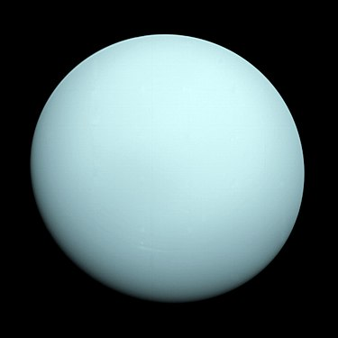

Der Uranus (Latinisierung von altgriechisch οὐρανός uranós, deutsch ‚Himmel‘)[3] ist von der Sonne aus mit einer durchschnittlichen Sonnenentfernung von 2,9 Milliarden Kilometern der siebte Planet im Sonnensystem und wird zu den Eisriesen gerechnet. Er wurde am 13. März 1781 von Wilhelm Herschel entdeckt und ist nach dem griechischen Himmelsgott Uranos benannt. Er ist damit als einziger Planet nach einem Gott der griechischen Götterwelt benannt. Der Durchmesser dieses Riesenplaneten ist mit über 51.000 Kilometern etwa viermal so groß wie der Durchmesser der Erde, das Volumen ist etwa 64-mal so groß wie das der Erde. Physikalisch ist Uranus mit dem Neptun vergleichbar und nimmt nach ihm mit rund 14 Erdmassen in der Massenrangfolge im Sonnensystem unter den Planeten den vierten Platz ein. Hinsichtlich des Durchmessers liegt er knapp vor Neptun auf Rang drei – nach Jupiter und Saturn. Uranus ist nur unter sehr günstigen Umständen freiäugig sichtbar, im kleinen Fernglas aber schon gut zu sehen. Seine blassgrüne Scheibe ist von der Erde aus betrachtet etwa 3,5″ groß. Mit Stand 2020 steht Uranus im Sternbild Widder und ist damit am Herbst- und Winterhimmel gut zu beobachten. Er läuft auf der Ekliptik um gut 4° pro Jahr nach Osten, 2024 wird er ins Sternbild Stier eintreten.
 1 2 3 4 5 6 78
9